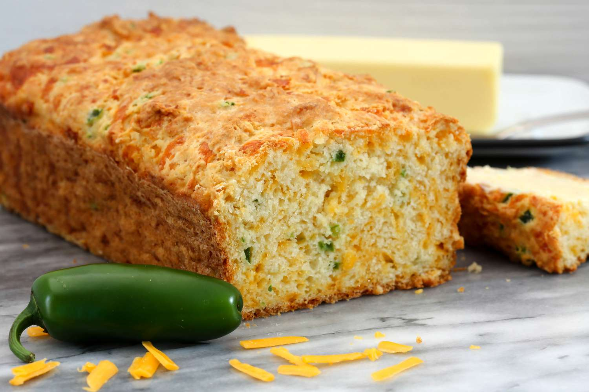

Jalapeno Cheese Bread

Following the example given, I decided to do my absolute favorite recipe, a variation on JCB
Ingredient list, 1-Pound Loaf
- 1/2 cup sour cream
- 1/8 cup water
- 1 egg
- 2 cups all-purpose flour
- 1 teaspoon salt
- 1 + 1/2 tablespoons sugar
- 1/4 teaspoon baking soda
- 3/4 cup grated sharp Cheddar cheese
- 2 tablespoons seeded and chopped fresh jalapeno pepper
- 1 + 1/2 teaspoons active dry yeast
Directions
(this comes from a bread machine cookbook, so the instructions are.... short)
- Place all ingredients in bread pan, select "Light Crust" setting, and press "Start"
- After the baking cycle ends, remove bread from pan, place on cake rack, and allow to cool 1 hour
Address
"The University of Montana"
"Alexander Blewett III School of Law - Office 125"
"32 Campus Dr"
"Missoula, MT 59812"